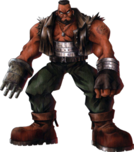

Barret Wallace (バレット・ウォーレス, Baretto Wōresu) is a player
character in Square Enix's role-playing video game Final Fantasy
VII. Created by character designer Tetsuya Nomura, he has since
appeared in the CGI film sequel, Final Fantasy VII: Advent Children
as well as other games and media in the Compilation of Final Fantasy
VII series. As of Advent Children, Barret is voiced by Masahiro
Kobayashi in Japanese and Beau Billingslea in English localizations.